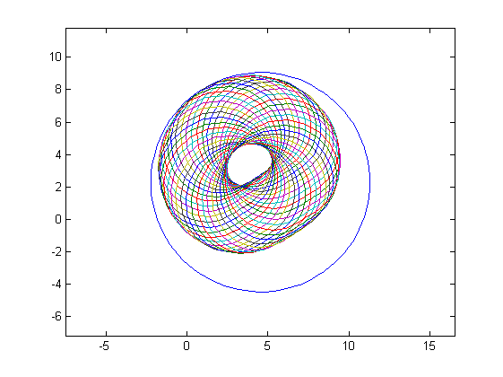
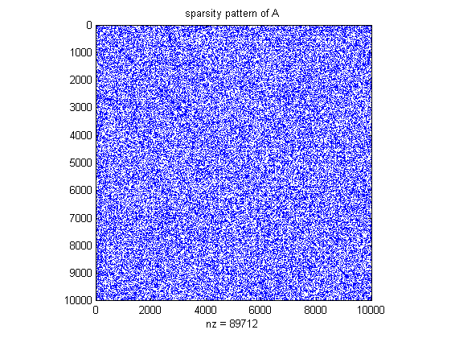
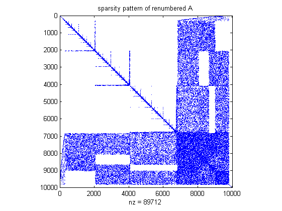

DEMOINTVAL Interval computations in INTLAB
Contents
- How to define an interval I
- How to define an interval II
- How to define an interval III
- How to define an interval IV
- Output formats of intervals I
- Output formats of intervals II
- Rigorous output
- Output formats of intervals III
- Changing interval output permanently
- Display with uncertainty
- Newton iteration
- Invoking interval operations
- Interval matrix operations
- Sharp interval multiplication
- Fast interval multiplication
- Acceleration by vector/matrix notation
- Overestimation of interval operations
- Interval standard functions
- Complex interval standard functions
- Standard functions with argument out of range
- Standard functions with argument out of range and Brouwer's fixed point theorem
- A common misuse of interval arithmetic
- Rigorous solution of linear systems
- Accuracy of rigorous linear system solving: Hilbert matrices
- Extremely ill-conditioned linear systems
- Structured linear systems
- Sparse linear systems
- Inclusion of eigenvalues and eigenvectors
- Eigenvalue pairs and invariant subspaces
- Eigenvalues of structured matrices
- Nonlinear systems of equations, polynomials, etc.
- Enjoy INTLAB
A key to interval operations in INTLAB is changing the rounding mode. Following we ensure "rounding to nearest".
setround(0)
How to define an interval I
There are four possibilities to generate an interval, the first is a simple typecast of a real or complex quantity, for example a matrix. It uses Matlab conversion, i.e. the first component does not necessarily contain "2.3". This is because Matlab first converts "2.3" into binary format, and then the type cast is called.
format compact long infsup u = intval( [ 2.3 -4e1 ; 3 0 ] )
intval u = [ 2.30000000000000, 2.30000000000001] [ -40.00000000000000, -40.00000000000000] [ 3.00000000000000, 3.00000000000000] [ 0.00000000000000, 0.00000000000000]
How to define an interval II
The second possibility is to use INTLAB conversion of constants. In this case the argument is a string and INTLAB verified conversion to binary is called rather than Matlab conversion.
u = intval( '0.1 -3.1 5e2 .3e1' )
intval u = 1.0e+002 * [ 0.00099999999998, 0.00100000000001] [ -0.03100000000001, -0.03099999999998] [ 5.00000000000000, 5.00000000000000] [ 0.03000000000000, 0.03000000000000]
The first component, for example, definitely contains "0.1". Since 0.1 is not finitely representable in binary format, the radius of the first component must be nonzero.
u.rad
ans =
1.0e-015 *
0.013877787807814
0.444089209850063
0
0
Generating an interval by an input string always produces a column vector. To change "u" into a 2 x 2 matrix, use
reshape(u,2,2)
intval ans = 1.0e+002 * [ 0.00099999999998, 0.00100000000001] [ 5.00000000000000, 5.00000000000000] [ -0.03100000000001, -0.03099999999998] [ 0.03000000000000, 0.03000000000000]
Note that arrays are stored columnwise in Matlab.
How to define an interval III
The third possibility is by specification of midpoint and radius.
u = midrad( [ -3e1+2i ; .4711 ; 3 ] , 1e-4 )
intval u = [ -30.00010000000001 + 1.99989999999999i, -29.99989999999999 + 2.00010000000001i] [ 0.47099999999998 - 0.00010000000001i, 0.47120000000001 + 0.00010000000001i] [ 2.99989999999999 - 0.00010000000001i, 3.00010000000001 + 0.00010000000001i]
How to define an interval IV
The fourth possibility is by specification of infimum and supremum
u = infsup( [ 1 2 ] , [ 4 7 ] )
intval u = [ 1.00000000000000, 4.00000000000000] [ 2.00000000000000, 7.00000000000000]
Output formats of intervals I
The output format can be changed using the different Matlab formats, for example
format midrad long e X = midrad( [ -3e1+2i ; .4711 ; 3 ] , 1e-4 )
intval X = < -3.000000000000000e+001 + 2.000000000000000e+000i, 1.000000000000001e-004> < 4.711000000000000e-001 + 0.000000000000000e+000i, 1.000000000001111e-004> < 3.000000000000000e+000 + 0.000000000000000e+000i, 1.000000000000001e-004>
or
format infsup long X
intval X = [ -30.00010000000001 + 1.99989999999999i, -29.99989999999999 + 2.00010000000001i] [ 0.47099999999998 - 0.00010000000001i, 0.47120000000001 + 0.00010000000001i] [ 2.99989999999999 - 0.00010000000001i, 3.00010000000001 + 0.00010000000001i]
or with a common exponent
1e4*X
intval ans = 1.0e+005 * [ -3.00001000000001 + 0.19998999999999i, -2.99998999999998 + 0.20001000000001i] [ 0.04709999999999 - 0.00001000000001i, 0.04712000000001 + 0.00001000000001i] [ 0.29998999999999 - 0.00001000000001i, 0.30001000000001 + 0.00001000000001i]
Output formats of intervals II
With two arguments the functions infsup and midrad define an interval, with one argument they control the output of an interval:
format short
u = infsup( [ 1 2 ] , [ 4 7 ] );
infsup(u), midrad(u)
intval u = [ 1.0000, 4.0000] [ 2.0000, 7.0000] intval u = < 2.5000, 1.5000> < 4.5000, 2.5000>
Rigorous output
Note that output in INTLAB is rigorous. That means,
left <= ans <= right for inf/sup notation ans in mid+/-rad for mid/rad notation
where ans is the true (real or complex) answer, and left,right, mid,rad are the numbers corresponding to the displayed decimal figures.
Output formats of intervals III
A convenient way to display narrow intervals is the following:
x=midrad(pi,1e-8); format short, infsup(x), midrad(x), disp_(x) format long, infsup(x), midrad(x), disp_(x) format short
intval x =
[ 3.1415, 3.1416]
intval x =
< 3.1416, 0.0001>
intval x =
3.1415
intval x =
[ 3.14159264358979, 3.14159266358980]
intval x =
< 3.14159265358979, 0.00000001000001>
intval x =
3.1415927_______
Mathematically the following is true: Form an interval of the displayed midpoint and a radius of 1 unit of the last displayed decimal figure, then this is a correct inclusion of the stored interval.
Changing interval output permanently
The interval output format can be changed permanently, for example, to infimum/supremum notation:
u = midrad( [ -3e1+2i ; .4711 ; 3 ] , 1e-4 );
format infsup
u
intval u = [ -30.0002 + 1.9998i, -29.9998 + 2.0002i] [ 0.4709 - 0.0002i, 0.4713 + 0.0002i] [ 2.9998 - 0.0002i, 3.0002 + 0.0002i]
or to midpoint/radius notation:
format midrad
u
intval u = < -30.0000 + 2.0000i, 0.0002> < 0.4711 + 0.0000i, 0.0002> < 3.0000 + 0.0000i, 0.0002>
or to display with uncertainties depicted by "_":
format _
u
intval u = -30.0000 + 2.0000i 0.4711 + 0.000_i 3.0000 + 0.000_i
Display with uncertainty
Display with uncertainty makes only sense for sufficiently narrow intervals. If the accuracy becomes too poor, INTLAB changes automatically to inf-sup or mid-rad display for real or complex intervals, respectively:
for k=-5:-1 disp_(midrad(pi,10^k)) end
intval =
3.1416
intval =
3.142_
intval =
3.14__
intval =
3.1___
[ 3.0415, 3.2416]
Newton iteration
The following code is an interval Newton iteration to include sqrt(2).
format long f = @(x)(x^2-2); % Function f(x) = x^2-2 X = infsup(1.4,1.7); % Starting interval for i=1:4 xs = X.mid; % Midpoint of current interval Y = f(gradientinit(X)); % Gradient evaluation of f(X) X = intersect( X , xs-f(intval(xs))/Y.dx ) % Interval Newton step with intersection end
intval X = 1.4_____________ intval X = 1.4142__________ intval X = 1.414213562_____ intval X = 1.41421356237309
The "display_" output format shows nicely the quadratic convergence.
The last displayed result (which is in fact an interval) proves that the true value of sqrt(2) is between 1.41421356237308 and 1.41421356237310. Indeed, sqrt(2)=1.41421356237309504...
The format "long e" in Matlab displays the most figures. With this we see that the internal accuracy of the final X is in fact even better, the width is only 2 units in the last place.
format long e X format short
intval X = 1.414213562373095e+000
Invoking interval operations
An operation uses interval arithmetic if at least one of the operands is of type intval. For example, in
u = intval(5); y = 3*u-exp(u)
intval y = -133.4131
the result y is an inclusion of 15-exp(5). However, in
u = intval(5); z = 3*pi*u-exp(u)
intval z = -101.2892
the first multiplication "3*pi" is a floating point multiplication. Thus it is not guaranteed that the result z is an inclusion of 15pi-exp(5).
Interval matrix operations
INTLAB is designed to be fast. Case distinctions in interval multiplication can slow down computations significantly due to interpretation overhead. Therefore, there is a choice between 'fast' and 'sharp' evaluation of interval matrix products. This applies only to 'thick' intervals, i.e. intervals with nonzero diameter.
Sharp interval multiplication
In the following example, c is a real random matrix, C is an interval matrix with diameter zero (a thin interval matrix), and CC is an interval matrix with nonzero diameter (a thick interval matrix), all of dimension nxn for n=1000. First we measure the computing time with option 'SharpIVmult'.
n = 1000;
c = randn(n);
C = intval(c);
C_ = midrad(c,.1);
intvalinit('SharpIVmult')
tic, scc = c*c; toc
tic, sCC = C*C; toc
tic, sCC = C*C_; toc
tic, sCC__ = C_*C_; toc
===> Slow but sharp interval matrix multiplication in use Elapsed time is 0.196586 seconds. Elapsed time is 0.379579 seconds. Elapsed time is 0.498574 seconds. Elapsed time is 34.983394 seconds.
As can be seen, there is not much penalty if not both matrices are thick interval matrices; then, however, computation is slowed down significantly.
Fast interval multiplication
intvalinit('FastIVmult')
tic, fcc = c*c; toc
tic, fCC = C*C; toc
tic, fCC = C*C_; toc
tic, fCC__ = C_*C_; toc
max(max(diam(fCC__)./diam(sCC__)))
===> Fast interval matrix multiplication in use (maximum overestimation
factor 1.5 in radius, see FAQ)
Elapsed time is 0.193008 seconds.
Elapsed time is 0.397343 seconds.
Elapsed time is 0.564570 seconds.
Elapsed time is 0.552216 seconds.
ans =
1.0620
As can be seen there is again not much penalty if not both matrices are thick. However, the 'fast' implementation is much faster than the 'sharp' at the cost of a little wider output. If intervals are very wide and any overestimation cannot be afforded (as in global optimization), the option 'SharpIVmult' is recommended. It is shown in
S.M. Rump: Fast and parallel interval arithmetic. BIT Numerical Mathematics, 39(3):539-560, 1999
that the maximum (componentwise) overestimation by the option 'FastIVmult' compared to 'SharpIVmult' is a factor 1.5, for real and complex intervals.
Acceleration by vector/matrix notation
It is advisable to use vector/matrix notation when using interval operation. Consider
n = 1000; x = 1:n; y = intval(x); tic for i=1:n y(i) = y(i)^2 - y(i); end t1 = toc
t1 =
0.8243
This simple initialization takes considerable computing time. Compare to
tic y = intval(x); y = y.^2 - y; t2 = toc ratio = t1/t2
t2 = 6.2733e-004 ratio = 1.3139e+003
Sometimes code looks more complicated, a comment may help. It is worth it.
Overestimation of interval operations
Note that the main principle of interval arithmetic is that for given intervals A,B and an operation o, the result a o b is included in the interval result A o B for all a in A and all b in B. Since the result must be an interval, overestimations cannot be avoided in many situations. For example, in
close, kmax = 40; i = sqrt(-1); a=midrad(2,.7); b=midrad(1-i,1); plotintval(3*a-exp(b)); hold on phi = linspace(0,2*pi,kmax); [A,B] = meshgrid( mid(a)+rad(a)*exp(i*phi) , mid(b)+rad(b)*exp(i*phi) ); plot(3*A-exp(B)) hold off
the blue circle is the result of the interval operations, whereas the many circles approximate the power set operation (see also the INTLAB demo). Another reason for overestimation are dependencies, see below.
Interval standard functions
Interval standard functions in INTLAB are rigorous. For a given interval X and a function X let Y be the computed value of f(X). Then f(x) is in Y for all x in X. For example
x = intval(1e10); format long
sin(x)
intval ans = -0.48750602508751
Note that the result is rigorous (try sin(2^1000) or similar). For timing comparison consider
format short
n=10000; x=random(n,1); X=intval(x);
tic, exp(x); tapprox = toc
tic, exp(X); trigorous = toc
ratio = trigorous/tapprox
tapprox =
1.3529e-004
trigorous =
0.0039
ratio =
28.5854
Complex interval standard functions
Complex interval standard functions are rigorous as well, for example
format long
Z = midrad(3+4i,1e-7);
R = sin(Z)
intval R = 3.85374_________ - 27.01681_________i
It is mathematically correct, that sin(z) is an element of R for every complex z with distance less than or equal to 1e-7 from 3+4i.
Standard functions with argument out of range
When entering a real argument leading to a complex value of a standard function, there are three possibilities to be specified by intvalinit:')
intvalinit('RealStdFctsExcptnNan'); sqrt(intval(-2)) intvalinit('RealStdFctsExcptnWarn'); sqrt(intval(-2)) intvalinit('RealStdFctsExcptnAuto'); sqrt(intval(-2))
===> Result NaN for real interval input out of range
intval ans =
NaN
===> Complex interval stdfct used automatically for real interval input
out of range, but with warning
Warning: SQRT: Real interval input out of range changed to be complex
intval ans =
-0.00000000000000 + 1.41421356237309i
===> Complex interval stdfct used automatically for real interval input
out of range (without warning)
intval ans =
-0.00000000000000 + 1.41421356237309i
Standard functions with argument out of range and Brouwer's fixed point theorem
There is a fourth possibility, which is useful in some applications, that is to ignore input arguments out of range. Note, however, that in this case further usage of a result may lead to incorrect conclusions, for example when applying Brouwer's fixed point theorem.
Consider f(x)=sqrt(x)-1. This function has no real fixed point. However
f = inline('sqrt(x)-1') X = infsup(-4,2) intvalinit('RealStdFctsExcptnIgnore'); Y = f(X)
f =
Inline function:
f(x) = sqrt(x)-1
intval X =
[ -4.00000000000000, 2.00000000000000]
===> !!! Caution: Input arguments out of range are ignored !!!
Warning: ===> Caution: Input arguments out of range are ignored !!!
===> Use intvalinit('RealStdFctsExcptnOccurred') to check whether this happened
===> Using Brouwer's Fixed Point Theorem may yield erroneous results (see Readme.txt)
intval Y =
[ -1.00000000000000, 0.41421356237310]
the interval X = [-4,2] is seemingly mapped by f into itself. To avoid such a wrong conclusion, one can check whether an input out of range occurred in previous computations:
intvalinit('RealStdFctsExcptnOccurred')
ans =
1
The flag is reset after checking.
A common misuse of interval arithmetic
The dependency problem is the most serious problem of (naive) interval arithmetic. The following procedure:
" Take some numerical algorithm and replace every operation by its corresponding interval operation. Then the computed interval result(s) definitely contain the true result which would be obtained without the presence of rounding errors. "
will most certainly fail in practice. Although a true statement (if no exception like divide by a zero interval occurs), the computed result interval(s) will, for very modest problem size, most certainly be of huge diameter and useless.
Consider, for example, the triangular matrix T where all elements on and below the diagonal are equal to 1, and take a randomly generated right hand side. The following lines do this for dimension n=50:
n = 50; T = tril(ones(n)); b = randn(n,1);
Then perform a standard forward substitution to compute an inclusion T\b. Note that X is defined to be an interval vector, so all operations are indeed interval operations (see above section "Invoking interval operations").
X = intval(zeros(n,1)); for i=1:n X(i) = b(i) - T(i,1:i-1)*X(1:i-1); end X
intval X = 0.43647872180107 -0.67722972645603 -1.88400288276598 -0.03990737384022 3.42603415900866 -1.87781392149108 0.25461446879337 0.52411675735520 -1.3608979388562_ 1.2648831793334_ 2.5772070026090_ -3.406630092734__ 0.143122681231__ 2.314925475665__ -3.34195823068___ 1.16817069699___ -1.01152721321___ 1.2033208581____ 0.4828591333____ -0.4894580242____ -0.720794038_____ 1.819007611_____ -1.777016911_____ 0.493300952_____ 0.54265177______ -0.95472531______ 0.15744097______ 0.2509040_______ -0.3500755_______ 1.3922485_______ -0.294108________ -0.239730________ -0.101542________ -1.128247________ -0.57294_________ 0.03245_________ 2.38999_________ -0.9424__________ -2.2255__________ 1.0012__________ 1.4345__________ -0.257___________ 1.739___________ -3.25____________ 1.03____________ -0.58____________ 0.83____________ 2.4_____________ -1.5_____________ -2.2_____________
The result is displayed with uncertainty perfectly making visible the loss of accuracy. This is due to one of the most common misuses of interval arithmetic, also called "naive interval arithmetic". For more details and examples cf.
S.M. Rump: Verification methods: Rigorous results using floating-point arithmetic. Acta Numerica, 19:287-449, 2010.
to be downloaded from "www.ti3.tuhh.de/rump". Note that the linear system is very well-conditioned:
cond(T)
ans = 64.270085531579454
By the well-known rule of thumb of numerical analysis we expect at least 14 correct digits in a floating-point approximation T\b. Using a proper (non-naive) method, an inclusion of this quality is indeed achieved:
verifylss(T,b)
intval ans = 0.43647872180107 -0.67722972645603 -1.88400288276598 -0.03990737384021 3.42603415900866 -1.87781392149108 0.25461446879337 0.52411675735520 -1.36089793885620 1.26488317933336 2.57720700260898 -3.40663009273350 0.14312268123135 2.31492547566497 -3.34195823067994 1.16817069699280 -1.01152721320779 1.20332085807660 0.48285913325893 -0.48945802416108 -0.72079403804954 1.81900761129244 -1.77701691064840 0.49330095170777 0.54265177495671 -0.95472530560015 0.15744096870847 0.25090398069167 -0.35007545239324 1.39224848008219 -0.29410843023999 -0.23972966622595 -0.10154195426049 -1.12824696738876 -0.57293833742982 0.03245344205424 2.38999404057419 -0.94237218580085 -2.22551318428373 1.00122504987574 1.43449030984063 -0.25676406006405 1.73862877339577 -3.25455860575392 1.02956115519650 -0.58496629678844 0.83048536827171 2.41969496670244 -1.45486573774027 -2.20966489134788
Such methods are called "self-validating methods" or "verification methods". For some details see the reference above or
S.M. Rump: Self-validating methods. Linear Algebra and its Applications (LAA), 324:3-13, 2001.
Due to an improved evaluation of the residual (default option "intvalinit('ImprovedResidual')" , see also function "lssresidual.m") 15 correct decimal digits of the result are computed.
Rigorous solution of linear systems
The INTLAB linear system solver can be called with "\" or "verifylss".' For example, [bare with me, I am often in Japan where the backslash appears like japanese Yen.]
n = 100; A = randn(n); b = A*ones(n,1); X = verifylss(A,b);
generates and solves a randomly generated 100x100 linear system. The inclusion and its quality is checked by
X([1:3 98:100]) max( X.rad ./ abs(X.mid) )
intval ans =
1.00000000000001
0.99999999999998
0.99999999999997
0.99999999999995
0.99999999999995
1.00000000000001
ans =
4.440892098500559e-016
which calculates the maximum relative error of the inclusion radius with respect to the midpoint. The same is done by
max(relerr(X))
ans =
4.440892098500558e-016
Accuracy of rigorous linear system solving: Hilbert matrices
For estimating accuracy, try
format long e n = 10; H = hilb(n); b = ones(n,1); X = verifylss(H,b)
intval X = -1.000001_________e+001 9.899985_________e+002 -2.3759925________e+004 2.4023901________e+005 -1.26125401_______e+006 3.7837607________e+006 -6.7266843________e+006 7.0012422________e+006 -3.9381986________e+006 9.2377500________e+005
The notoriously ill-conditioned Hilbert matrix is given by H_ij := 1/(i+j-1). To estimate the accuracy, we use the symbolic toolbox to compute the perturbation of the solution when perturbing only the (7,7)-element of the input matrix by 2^(-52):
Hs = sym(H,'f');
Hs(7,7) = Hs(7,7)*(1+sym(2^(-52)));
double( Hs \ b )
ans =
-9.998909219879415e+000
9.899029028469076e+002
-2.375788526931432e+004
2.402204394266768e+005
-1.261165400818671e+006
3.783516991353087e+006
-6.726284402492507e+006
7.000855681693432e+006
-3.937995712379769e+006
9.237303835539117e+005
The statement "sym(H,'f')" makes sure that no conversion error appears when changing H into symbolic format. This tiny perturbation already changes the solution in the fourth place; thus the computed inclusion is very accurate.
Extremely ill-conditioned linear systems
By default, all computations in INTLAB are, like in Matlab, performed in double precision. This restricts treatable linear systems to a maximum condition number of roughly 10^16.
Starting with INTLAB Version 7, I rewrote my linear system solver completely. Now, although only double precision is used, linear systems with larger condition numbers are solvable. Consider
format long _ n = 20; A = invhilb(n); condA = norm(double(inv(sym(A))))*norm(A)
condA =
5.739302170427572e+027
The common rule of thumb tells that for a condition number 10^k, an algorithm in double precision should produce 16-k correct digits. In our case this means roughly 16-27=-11 "correct" digits, namely none. For a random right hand side Matlab computes
b = A*randn(n,1); x = A\b
Warning: Matrix is close to singular or badly scaled.
Results may be inaccurate. RCOND = 1.316790e-028.
x =
1.0e+005 *
4.956358097001384
1.924440944718872
0.740460634353876
0.277324279179001
0.098775572369261
0.032234443147508
0.009038789847466
0.001781823596347
0.000008962296915
-0.000221681754120
-0.000110793103237
-0.000015845860560
0.000000967672084
0.000011328474905
0.000016901668454
0.000044975312430
0.000057139180397
0.000045572311265
-0.000070611269877
-0.000235097287047
A corresponding warning indicates the difficulty of the problem. Note that in this case the Matlab guess of the condition number is pretty good.
An verified inclusion of the solution is computed by
X = verifylss(A,b,'illco')
intval X = 1.0e+005 * -5.554580338451__ -2.290525859985__ -0.9184426547071_ -0.3502858123504_ -0.12295846941020 -0.03746863973317 -0.00851895053443 -0.00060423368651 0.00060069652090 0.00021455603310 -0.00012310018332 -0.00018590590464 -0.00011940134610 -0.00001858299360 0.00004138612212 0.00011883163968 0.00028365987709 0.00067609349427 0.00137251161955 0.00257510902823
As expected the Matlab approximation differs significantly from the true values, for some components the sign is incorrect. The maximum relative error of the components of the computed inclusion is
max(relerr(X))
ans =
1.888560103651357e-013
so that each component is accurately included with at least 12 correct figures.
Structured linear systems
In general, intervals are treated as independent quantities. If, however, there are dependencies, then taking them into account may shrink the solution set significantly. An example is
format short n = 4; e = 1e-3; intvalinit('displayinfsup'); A = midrad( toeplitz([0 1+e e 1+e]),1e-4); b = A.mid*ones(n,1); Amid = A.mid X1 = verifylss(A,b)
===> Default display of intervals by infimum/supremum (e.g. [ 3.14 , 3.15 ])
Amid =
0 1.0010 0.0010 1.0010
1.0010 0 1.0010 0.0010
0.0010 1.0010 0 1.0010
1.0010 0.0010 1.0010 0
intval X1 =
[ 0.3300, 1.6700]
[ 0.3300, 1.6700]
[ 0.3300, 1.6700]
[ 0.3300, 1.6700]
First the matrix has been treated as a general interval matrix without dependencies. Recall that only the midpoint is displayed above; all entries of the interval matrix have a uniform tolerance of 1e-4.
Several structural information may be applied to the input matrix, for example,
X2 = structlss(structure(A,'symmetric'),b); X3 = structlss(structure(A,'symmetricToeplitz'),b); X4 = structlss(structure(A,'generalToeplitz'),b); X5 = structlss(structure(A,'persymmetric'),b); X6 = structlss(structure(A,'circulant'),b); res = [ X1 X2 X3 X4 X5 X6 ]; rad(res)
ans =
0.6700 0.5062 0.1689 0.3376 0.5062 0.0003
0.6700 0.5062 0.1688 0.3375 0.5062 0.0003
0.6700 0.5062 0.1688 0.3375 0.5062 0.0003
0.6700 0.5062 0.1689 0.3376 0.5062 0.0003
Here only the radii of the inclusions are displayed. Note that the inclusion may become much narrower, in particular treating the input data as a circulant matrix.
Sparse linear systems
The following generates a random sparse system with about 9 nonzero elements per row.
format short
n=10000; A=sprand(n,n,2/n)+speye(n); A=A*A'; b = ones(n,1);
The linear system is generated to be symmetric positive definite. Before calling the verified linear system solver, the fill-in should reduced. The original matrix looks like
p = symamd(A);
spy(A)
title('sparsity pattern of A')
 whereas after minimum degree reordering the matrix looks like
spy(A(p,p))
title('sparsity pattern of renumbered A')
 The timing for the built-in (floating point) solver compared to the verified solver is as follows:
tic, x = A(p,p)\b(p); toc
Elapsed time is 1.031284 seconds.
tic, X = verifylss(A(p,p),b(p)); toc
Elapsed time is 10.247384 seconds.
Inclusion of eigenvalues and eigenvectors
To compute verified inclusions of eigenvalue/eigenvector pairs of simple or multiple eigenvalues, consider, for example, the famous Wilkinson(21) matrix:
format long W = wilkinson(21); % generation of the matrix [V,D] = eig(W); % eigenvalue/eigenvector approximations for k=18:21 [L,X] = verifyeig(W,D(k,k),V(:,k)) % inclusions for the small eigenvalues end
intval L = [ 9.21067864730491, 9.21067864730493] intval X = [ 0.38254969966285, 0.38255346829126] [ -0.30195762107531, -0.30195464641474] [ -0.44616949145341, -0.44616509612508] [ -0.23821025530394, -0.23820790863184] [ -0.08043683351433, -0.08043604111056] [ -0.02004656852131, -0.02004637103731] [ -0.00397282451038, -0.00397278537304] [ -0.00065454332388, -0.00065453687577] [ -0.00009233373504, -0.00009233282521] [ -0.00001124556775, -0.00001124545543] [ -0.00000000000796, 0.00000000000441] [ 0.00001124549448, 0.00001124549602] [ 0.00009233314938, 0.00009233314961] [ 0.00065453917421, 0.00065453917426] [ 0.00397279932374, 0.00397279932376] [ 0.02004644143206, 0.02004644143207] [ 0.08043632356869, 0.08043632356870] [ 0.23820874511766, 0.23820874511767] [ 0.44616666286421, 0.44616666286422] [ 0.30195570675133, 0.30195570675134] [ -0.38255104301985, -0.38255104301984] intval L = [ 9.21067864736133, 9.21067864736134] intval X = [ -0.38255104297972, -0.38255104297971] [ 0.30195570669808, 0.30195570669809] [ 0.44616666282990, 0.44616666282991] [ 0.23820874515454, 0.23820874515455] [ 0.08043632369798, 0.08043632369799] [ 0.02004644181481, 0.02004644181483] [ 0.00397280080724, 0.00397280080726] [ 0.00065454652171, 0.00065454652175] [ 0.00009237729884, 0.00009237729905] [ 0.00001155649459, 0.00001155649598] [ 0.00000250936453, 0.00000250937570] [ 0.00001155645571, 0.00001155655712] [ 0.00009237697963, 0.00009237780109] [ 0.00065454425887, 0.00065455008065] [ 0.00397278707268, 0.00397282240846] [ 0.02004637251134, 0.02004655081274] [ 0.08043604561816, 0.08043676105194] [ 0.23820792162812, 0.23821004036155] [ 0.44616512036678, 0.44616908876130] [ 0.30195466279576, 0.30195734851040] [ -0.38255312301051, -0.38254972044348] intval L = [ 10.74619418290332, 10.74619418290335] intval X = [ -0.69026200713617, -0.68099702717464] [ -0.51506256501838, -0.50809162231641] [ -0.20917679659809, -0.20634100224372] [ -0.05930417588698, -0.05849592710531] [ -0.01298422272875, -0.01280915912047] [ -0.00232028763531, -0.00228902076749] [ -0.00035075669177, -0.00034605790797] [ -0.00004597072026, -0.00004535421103] [ -0.00000531819582, -0.00000524698795] [ -0.00000054576090, -0.00000053829947] [ -0.00000000037459, 0.00000000032273] [ 0.00000054176495, 0.00000054183680] [ 0.00000528051568, 0.00000528052409] [ 0.00004564265094, 0.00004564265205] [ 0.00034827632147, 0.00034827632165] [ 0.00230389704304, 0.00230389704308] [ 0.01289036346530, 0.01289036346531] [ 0.05887627105147, 0.05887627105149] [ 0.20767158065878, 0.20767158065879] [ 0.51143021570802, 0.51143021570803] [ 0.68538488697155, 0.68538488697156] intval L = [ 10.74619418290339, 10.74619418290341] intval X = [ -0.68538488697150, -0.68538488697149] [ -0.51143021570804, -0.51143021570803] [ -0.20767158065890, -0.20767158065889] [ -0.05887627105178, -0.05887627105177] [ -0.01289036346632, -0.01289036346631] [ -0.00230389704758, -0.00230389704755] [ -0.00034827634650, -0.00034827634637] [ -0.00004564281516, -0.00004564281441] [ -0.00000528176275, -0.00000528175711] [ -0.00000055250770, -0.00000055245907] [ -0.00000010308388, -0.00000010261539] [ -0.00000055525267, -0.00000055027712] [ -0.00000530903588, -0.00000526101476] [ -0.00004587520507, -0.00004546055784] [ -0.00035002587813, -0.00034688915770] [ -0.00231556583075, -0.00229459449769] [ -0.01295494469432, -0.01283715990140] [ -0.05917455167414, -0.05864000364320] [ -0.20872376133740, -0.20685800505155] [ -0.51399800375120, -0.50936198964341] [ -0.68887100341245, -0.68262771692544]
Eigenvalue pairs and invariant subspaces
The smallest eigenvlues are 10.74619418290332 and 10.74619418290339, where all displayed digits are verified to be correct. Invariant subspaces of nearby eigenvalues are in general ill-conditioned. Nearby eigenvalues can also be regarded as clusters. From the inclusions above we can judge how narrow the eigenvalues are. So one of the approximations can be used as an approximation of the pair.
[L,X] = verifyeig(W,D(18,18),V(:,18:19)) % inclusion of the 18/19 eigenvalue pair [L,X] = verifyeig(W,D(20,20),V(:,20:21)) % inclusion of the 20/21 eigenvalue pair
intval L = [ 9.21067864730490 - 0.00000000002823i, 9.21067864736135 + 0.00000000002823i] intval X = [ 0.38238372972519, 0.38238372972520] [ -0.38255104297972, -0.38255104297971] [ -0.30182364279529, -0.30182364279528] [ 0.30195570669808, 0.30195570669810] [ -0.44597152651395, -0.44597152651394] [ 0.44616666282990, 0.44616666282991] [ -0.23810456166113, -0.23810456166112] [ 0.23820874515453, 0.23820874515454] [ -0.08040114377620, -0.08040114377619] [ 0.08043632369795, 0.08043632369796] [ -0.02003767387999, -0.02003767387998] [ 0.02004644181473, 0.02004644181474] [ -0.00397106177192, -0.00397106177191] [ 0.00397280080692, 0.00397280080693] [ -0.00065425290207, -0.00065425290206] [ 0.00065454652011, 0.00065454652012] [ -0.00009229275686, -0.00009229275685] [ 0.00009237728926, 0.00009237728927] [ -0.00001124050911, -0.00001124050910] [ 0.00001155642711, 0.00001155642712] [ 0.00000000054875, 0.00000000054876] [ 0.00000250882011, 0.00000250882012] [ 0.00001124556347, 0.00001124556348] [ 0.00001155150876, 0.00001155150877] [ 0.00009233315917, 0.00009233315918] [ 0.00009233690625, 0.00009233690626] [ 0.00065453917584, 0.00065453917585] [ 0.00065426024954, 0.00065426024955] [ 0.00397279932407, 0.00397279932408] [ 0.00397106325540, 0.00397106325541] [ 0.02004644143215, 0.02004644143216] [ 0.02003767426273, 0.02003767426274] [ 0.08043632356872, 0.08043632356873] [ 0.08040114390547, 0.08040114390548] [ 0.23820874511767, 0.23820874511768] [ 0.23810456169799, 0.23810456169800] [ 0.44616666286421, 0.44616666286422] [ 0.44597152647961, 0.44597152647962] [ 0.30195570675133, 0.30195570675134] [ 0.30182364274202, 0.30182364274203] [ -0.38255104301985, -0.38255104301984] [ -0.38238372968506, -0.38238372968505] intval L = [ 10.74619418290330 - 0.00000000000006i, 10.74619418290341 + 0.00000000000006i] intval X = [ -0.36603458819311, -0.36603458819310] [ -0.68538488697150, -0.68538488697149] [ -0.27313288045110, -0.27313288045109] [ -0.51143021570802, -0.51143021570801] [ -0.11090845881022, -0.11090845881021] [ -0.20767158065887, -0.20767158065886] [ -0.03144328396830, -0.03144328396829] [ -0.05887627105171, -0.05887627105170] [ -0.00688418868320, -0.00688418868319] [ -0.01289036346609, -0.01289036346608] [ -0.00123041231389, -0.00123041231388] [ -0.00230389704652, -0.00230389704651] [ -0.00018599939742, -0.00018599939741] [ -0.00034827634064, -0.00034827634063] [ -0.00002437573897, -0.00002437573896] [ -0.00004564277672, -0.00004564277671] [ -0.00000281980995, -0.00000281980994] [ -0.00000528147088, -0.00000528147087] [ -0.00000028686634, -0.00000028686633] [ -0.00000054999309, -0.00000054999308] [ 0.00000002395494, 0.00000002395495] [ -0.00000007886855, -0.00000007886854] [ 0.00000054429080, 0.00000054429081] [ -0.00000029754363, -0.00000029754362] [ 0.00000528080893, 0.00000528080894] [ -0.00000282104940, -0.00000282104939] [ 0.00004564268955, 0.00004564268956] [ -0.00002437590218, -0.00002437590217] [ 0.00034827632735, 0.00034827632736] [ -0.00018599942228, -0.00018599942227] [ 0.00230389704411, 0.00230389704412] [ -0.00123041231839, -0.00123041231838] [ 0.01289036346554, 0.01289036346555] [ -0.00688418868421, -0.00688418868420] [ 0.05887627105155, 0.05887627105156] [ -0.03144328396859, -0.03144328396858] [ 0.20767158065881, 0.20767158065882] [ -0.11090845881031, -0.11090845881030] [ 0.51143021570803, 0.51143021570804] [ -0.27313288045107, -0.27313288045106] [ 0.68538488697155, 0.68538488697156] [ -0.36603458819300, -0.36603458819299]
Note that interval output with uncertainty ("_") is used, so all displayed decimal places of the bases of the invariant subspaces are verified to be correct. As explained in section "Output formats of intervals III", the inclusion 10.7461941829034_ of the two smallest eigenvlues reads [10.7461941829033,10.7461941829035], thus including the true eigenvalues as displayed above.
The mathematical statement is that the displayed intervals for the cluster contain (at least) two eigenvalues of the Wilkinson matrix W. The size of the cluster is determined by the number of columns of the invariant subspace approximation.
Eigenvalues of structured matrices
As for linear systems, the interval input matrix may be structured. Taking into account such structure information may shrink the inclusion. As an example consider
format short e = 1e-3; A = midrad( toeplitz([0 1+e -e/2 1+e]),1e-4); [v,d] = eig(A.mid); xs = v(:,2:3); lambda = d(2,2); X1 = verifyeig(A,lambda,xs); X2 = structeig(structure(A,'symmetric'),lambda,xs); X3 = structeig(structure(A,'symmetricToeplitz'),lambda,xs); X4 = structeig(structure(A,'generalToeplitz'),lambda,xs); X5 = structeig(structure(A,'persymmetric'),lambda,xs); X6 = structeig(structure(A,'circulant'),lambda,xs); res = [ X1 X2 X3 X4 X5 X6 ]; rad(res)
ans =
1.0e-003 *
0.5584 0.5419 0.3314 0.4396 0.4792 0.4000
As for linear systems, only the radii of the inclusions are displayed.
Nonlinear systems of equations, polynomials, etc.
For inclusions of systems of nonlinear equations, of roots of polynomials etc. cf. the corresponding demos.
Enjoy INTLAB
INTLAB was designed and written by S.M. Rump, head of the Institute for Reliable Computing, Hamburg University of Technology. Suggestions are always welcome to rump (at) tuhh.de